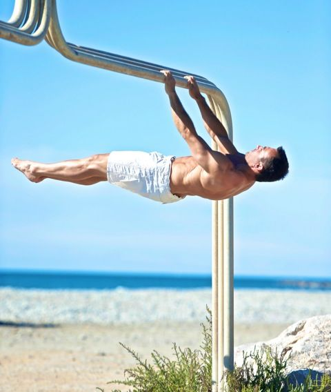

Elementy statyczne
Elementy statyczne to elementy izometryczne, które są przytrzymywane przez określony czas ( na zawodach zazwyczaj 2 lub 3 sekundy) bez ruchu.
L-sit
Jest to pierwszy element, którego się nauczyłem i polega on na przytrzymaniu nóg równolegle do podłoża, jednocześnie utrzymując cały ciężar ciała na rękach. Są 3 warianty tego ćwiczenia: na podłodze, na drązkach równoległych i na drążku do podciągania. Najłatwiej wykonać to ćwiczenie na drążkach równoległych, a najtrudniej na podłodze, ponieważ robiąc to ćwiczenie na podłodze trzeba mocno się wypchnąć oraz trzymać nogi wysoko, w przeciwnym razie pięty będą leżały na podłodze, a L-sit nam nie wyjdzie. Żeby wykonać ten element trzeba mieć też dobrze rozciągniętą grupę mięśni z tyłu ud. Trudniejszą wersją L-sit'a jest V-sit, który wymaga jeszcze silniejszego brzucha i jeszcze bardziej rociągniętych tylnych mięśni ud.

Back lever
Jest to świetny element, od którego zaczyna się prawdziwa nauka statyki. Back lever jest jednym z najprostszych elementów, ale jest dużo trudniejszy od L-sit'a. Można go wykonywać na pierścieniach albo na drążku, przy czym pierścienie są wygodniejsze przez możliwość swobodnej rotacji nadgarstków. Żeby nauczyć się tego elementu zaczyna się w pozycji Back lever'a mając podkulone nogi, potem wyciągamy jedną nogę trzymając drugą podkuloną, jeżeli opanujemy to, możemy spróbować wyprostować obie nogi, ale nogi powinny być odwiedzione na boki, tworząc literę A. Po opanowaniu tej progresji pora jest przejść do pełnego Back lever'a. Prostujemy obie nogi trzymając je razem i próbujemy utrzymać tę pozycję przez co najmniej 5 sekund. Te progresje skupiają się na tym, żeby stopniowo oddalać środek ciężkości od rąk, przez co ćwiczenie staje się coraz trudniejsze.
Front lever
Bardzo podobny do Back lever'a, różni się tylko pozycją ciała względem ziemi (tutaj plecy skierowane są do ziemi) oraz trudnością. Front lever jest trudnym ćwiczeniem, ale progresje są takie same jak do Back lever'a. Trenując ten element warto zdjąć buty, ponieważ nawet 300 gramów na końcu dźwigni w tak trudnym ćwiczeniu zmienia bardzo wiele.

Dragon flag
Ciekawy element, o którym wielu zapomina, skupiając się tylko na Human flag'u. Bardzo ważną rolę grają tutaj mięśnie brzucha Rectus Abdominis, czyli przód brzucha. Te mięśnie odpowiadają również za "sześciopak", więc to ćwiczenie może byc dobrym sposobem na dojście do brzucha z reklam.
Human flag
Starszy brat Dragon flag'a, który wzmacnia głównie boczne mieśnie brzucha. Wykonując to ćwiczenie trzeba pamietać, że górna ręka musi ciągnąć ciało, a dolna pchać je. Zgranie tych dwóch czynności pomaga utrzymać ciało prostopadle do słupa.
Planche
Bardzo trudny element wykonywany w pozycji poziomej do podłoża. Możemy porównać tę pozycję do pompek, tylko że nogi nie mogą dotykać podłogi. To ćwiczenie wykonuje się na prostych rękach (wykonanie go ze zgiętymi łokciami powoduje, że ćwiczenie staje się dużo łatwiejsze i nazywane jest Elbow lever'em patrz zdjęcie nr. 2), a Planche z szeroko rozstawionymi nogami jest dużo prostszy od wersji z nogami złączonymi.
Maltese
Ekstremalnie trudna pozycja, która sprawia trudności nawet najlepszym na świecie. Wygląda jak Planche, tylko ręce są rozstawione bardzo szeroko, a nie w jednej linii z barkami. Najczęsciej Maltese da się zauważyć w wersji z szeroko rozstawionymi nogami, ponieważ złączenie nóg powoduje, że to ćwiczenie staje się jednym z najtrudniejszych istniejących elementów statycznych.
Handstand
Czyli po prostu stanie na rękach, jeden z łatwiejszych elementów statycznych, w którym głównie chodzi o balans. Oczywiście wejście do Handstand'u czy pompki w Handstand'zie to już dynamiczne elementy, ale samo stanie na rękach jest statyczne. Utrzymywanie się w staniu na rękach możliwe jest poprzez wbijanie palców mocno w ziemie lub popuszczanie ich, żeby kontrolować ruch przód-tył.
Iron cross
Element, który wykonuje się praktycznie tylko na pierścieniach. Wygląda bardzo spektakularnie, a chodzi w nim o utrzymanie całego ciężaru ciała na prostych rękach, które trzyma się prostopadle do linii ciała.
Victorian cross
Kolejny ekstremalnie trudny element, który można zobaczyć na mistrzostwach świata wykonywany przez najlepszych z najlepszych.